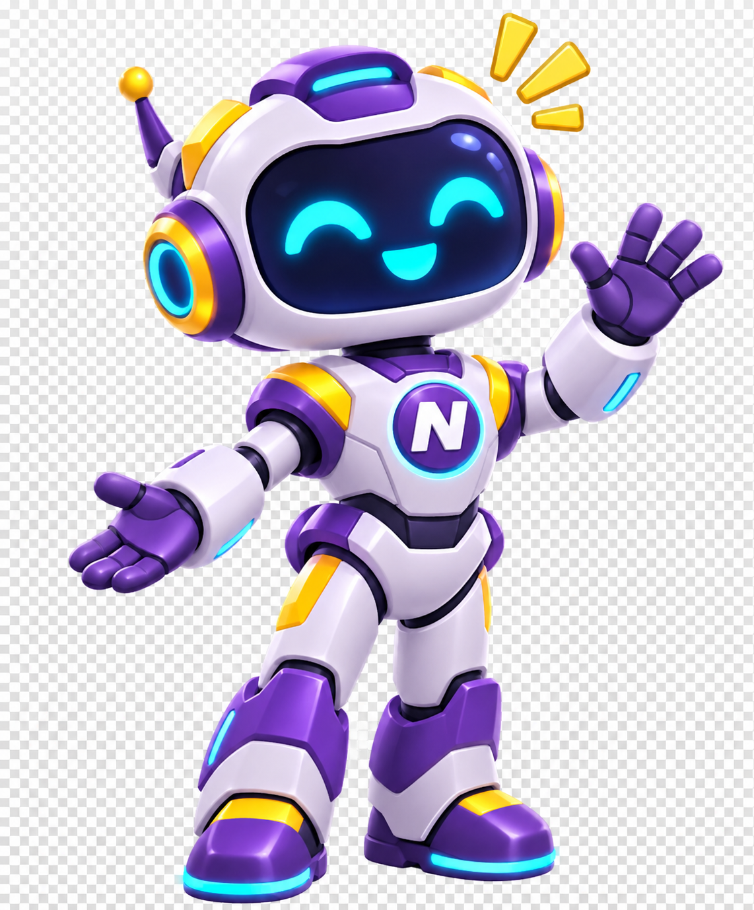

GAME PEMBELAJARAN • UNTUK SELURUH JURUSAN SMK
NUMERA:
Misi Numerasi
Masuki dunia kerja bersama NIMO! Pecahkan tantangan angka, baca data, ukur kebutuhan, dan ambil keputusan cerdas melalui situasi yang dekat dengan berbagai bidang keahlian SMK.
4 misi • 12 tantangan • Pembahasan otomatis • Progres tersimpan di perangkat
